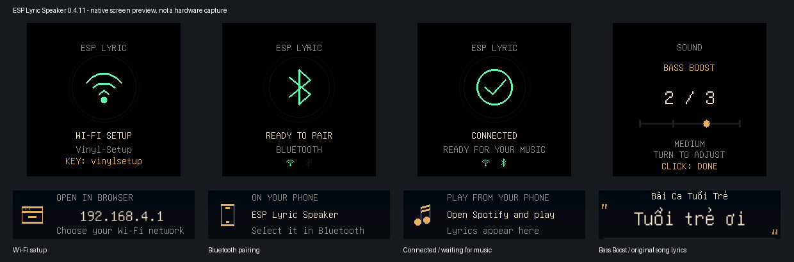

Firmware 0.4.11 · Dual ESP32
Your music.
Now in motion.
ESP32 WROOM + ESP32-C34 MB / boardGC9A01 + ST7789
ESP32-C3 Super Mini
| Module / signal | Board | GPIO |
|---|---|---|
| Both TFTs: SDA / DIN / MOSI | ESP32-C3 | 1 |
| Both TFTs: SCL / CLK | ESP32-C3 | 0 |
| Both TFTs: DC | ESP32-C3 | 8 |
| Both TFTs: RES / RST | ESP32-C3 | 3 |
| GC9A01 round: CS | ESP32-C3 | 21 |
| ST7789 lyric: CS | ESP32-C3 | 4 |
| HW-040: CLK | ESP32-C3 | 7 |
| HW-040: DT | ESP32-C3 | 10 |
| HW-040: SW | ESP32-C3 | 20 |
| UART TX → ESP32 RX | ESP32-C3 → ESP32 | 5 → 22 |
| UART RX ← ESP32 TX | ESP32-C3 ← ESP32 | 6 ← 23 |
| WeAct PCM5100A: BCK | ESP32 | 13 |
| WeAct PCM5100A: WS | ESP32 | 14 |
| WeAct PCM5100A: DIN | ESP32 | 27 |
